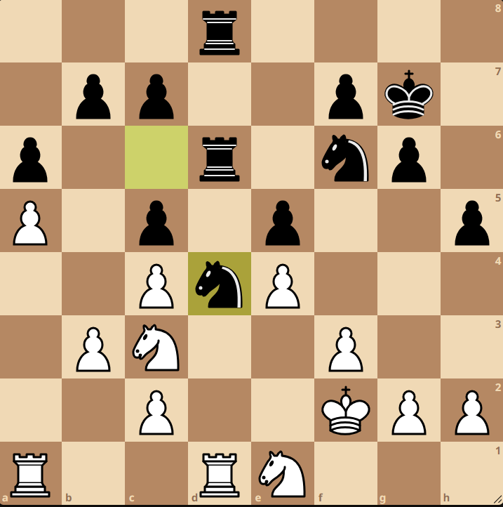
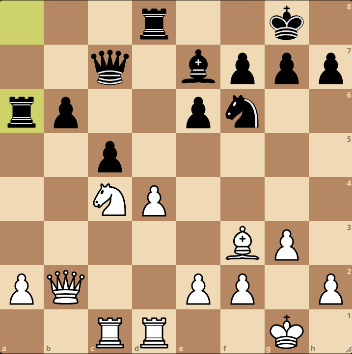

1.Maç : Fransız Savunması , Steinitz Varyantı
1. e4 e6 2. d4 d5 3. Nc3 Nf6 4. e5 Nfd7 5. f4 c5 6. Nce2 Nc6 7. c3 a5 8. Nf3 a4 9. Be3 Be7 10. g4 Qa5 11. Bg2 a3 12.b3, cxd4 13. b4 Qc7 14. Nexd4 Nb6 15. 0-0 Nc4 16. Bf2 Bd7 17. Qe2 Nxd4 18. Nxd4 Nb2 19. Qe3 Rc8 20. Rac1 Qc4 21. f5 Qd3 22. Qe1 Bg5 23. Rc2 Rc4 24. h4 Bf4 25. Qb1 Rxc3 26. Rxc3 Qxc3 27. fxe6 fxe6 28. Ne2 Qxe5 29. Nxf4 Qxf4 30. Qc2?
Beyazlarda Gukesh'in buradaki muhtemel düşüncesi, 1. yatayda pasif kalan vezirini aktif bir şekilde oyuna sokmak olabilir. Fakat vezirin burdan oyuna girmesi, zaten 2 piyon önde olan ve vezirleri değişmek isteyen siyahların eline inanılmaz bir koz verdi. Vc4!
23... Qc4 31. Qd2 0-0 32. Bd4 Nd3 33. Qe3 Rxf1+ 34. Bxf1 e5!
Taş kaybına uğrayacağını düşündüğümüz siyahlar için gerçekten etkileyici bir feda!
35. Bxe5 Qxg4+ 36. Bg2 Bf5 37. Bg3 Be4 38. Kh2 h6 39. Bh3 Qd1 40. Bd6 Qc2+ 41. Kg3 Qxa2 42. Be6+ Kh8 0–1
43. Vxe4 hamlesine 43...Vf2 ile başlayan bir mat ağına giren beyazlar, zaten kötü olan bu pozisyonu daha fazla oynamak istemedi ve konumu terk etti.
2.Maç : İtalyan Açılışı , Giuoco Piano Sistemi
1. e4 e5 2. Nf3 Nc6 3. Bc4 Bc5 4. d3 Nf6 5. Nc3 a6 6. a4 d6 7. O-O h6 8. Be3 Be6 9. a5 Bxc4 10. dxc4 O-O 11. Bxc5 dxc5 12. b3 Qxd1 13. Rfxd1 Rad8 14. Rdc1 Nd4 15. Ne1 Rd6 16. Kf1 g6 17. Rd1 Rfd8 18. f3 Kg7 19. Kf2 h5 20. Ne2 Nc6 21. Nc3 Nd4 22. Ne2 Nc6 23. Nc3 Nd4 ½–½
Ding Liren beyazlarla olmasınınn avantajını kullanmak istemedi ve zaten önde olmanın verdiği rahatlıkla bu oyunu zorlamadı.Skor 1.5-0.5'e geldi.
3.Maç : Kabul Edilmemiş Vezir Gambiti , Değişim Varyantı
1. d4 Nf6 2. Nf3 d5 3. c4 e6 4. cxd5 exd5 5. Nc3 c6 6. Qc2 g6 7. h3 Bf5 8. Qb3 Qb6 9. g4 Qxb3 10. axb3 Bc2
Enteresan ve riskli bir hamle. Siyahlar bir piyon almak uğruna filini tehlikeli rakip bölgesine sokuyor. Bu, hem piyon kazanma şansı yaratıyor hem de rakip taşlar arasında bir koordinasyon problemi yaratıyor. Tek sıkıntı ise bu filin burda haddinden fazla kalması durumunda düşme tehlikesi...
11. Bf4 h5 12. Rg1 hxg4 13. hxg4 Nbd7 14. Nd2 Rg8 15. g5 Nh5 16. Bh2 Rh8 17. f3 Ng7 18. Bg3 Rh5?!
Bu hamle belki de sonrasında gelecek olan hamlelerin habercisiydi. Oysa basitçe oynanacak bir Fe7 hamlesi, piyon yapısı kötü durumda olan beyazları stabil bir konumda tutmaya yeterdi.
19. e4!
İşte korkulan oluyor ve siyahlar filini beyazların oluşturduğu ufak bir mezarda kaybediyor.
19...dxe4 20. fxe4 Ne6 21. Rc1 Nxd4 22. Bf2 Bg7 23. Ne2 Nxb3 24. Rxc2 Nxd2 25. Kxd2 Ne5 26. Nd4 Rd8 27. Ke2 Rh2 28. Bg2 a6 29. b3 Rd7 30. Rcc1 Ke7 31. Rcd1 Ke8 32. Bg3 Rh5 33. Nf3 Nxf3 34. Kxf3 Bd4 35. Rh1 Rxg5 36. Bh3 f5 37. Bf4 Rh5 1–0
Ding Liren, aslında gayet de üstün başladığı maçta, yaptığı aslında çok da kötü olmayan bir hamlenin ardından taşını, ve ardından da oyunu kaybetti. İşte satrançta böyle bir oyun...
4.Maç : Zukertort Opening
1. Nf3 d5 2. e3 Nf6 3. b3 Bf5 4. Be2 h6 5. Ba3 Nbd7 6. 0-0 e6 7. Bxf8 Nxf8
Dünya Şampiyonluk maçlarında çok sık görmediğimiz bir açılış bizi karşıladı. Konum pratikte dengeli bir beraberenin habercisi gibi gözüküyor.
8. c4 N8d7 9. Nc3 0-0 10. cxd5 exd5 11. b4
Beyazlar vezirini dışarı çıkmak için b3 ve a4 karelerine ihtiyaç duyuyordu. b4 güzel bir yöntem.
c6 12. Nd4 Bh7 13. Qb3 Ne5 14. a4 Rc8 15. a5 b6 16. Nf3?!
Ding Liren tekrardan Fa6 ile konumu zorlamak varken taşları değişiyor. Bir dünya şampiyonu ve buradaki şampiyon adayı olarak beyazlarla bu kadar güvenli oynamanın sanırız açıklaması oyuncunun üzerindeki dünya şampiyonu apoleti ve bunu sadece 18 yaşında bir gence kaybetme kaygısı olmalı.
Nxf3+ 17. Bxf3 d4 18. Ne2 dxe3 19. dxe3 Be4 20. Rfd1 Qe7 21. Bxe4 Nxe4 22. axb6 axb6 23. Nc3 Rfd8 24. Nxe4 Qxe4 25. h3 c5 26. Rxd8+ Rxd8 27. bxc5 bxc5 28. Rc1 Qe5 29. Qc2 Rd5 30. g3 f5 31. Kg2 Kh7 32. Qc4 Qd6 33. e4 Re5 34. exf5 Rxf5 35. Qe4 Qd5 36. Qxd5 Rxd5 37. Kf3 Kg6 38. Ke4 Rd4+ 39. Ke3 Rd5 40. Ke4 Rd4+ 41. Ke3 Rd5 42. Ke4 Rd4+ ½–½
Oyunun devamında da bir sürpriz olmadı ve Ding Liren yeniden elindeki beyaz olma avantajını kullanmak istemedi.
5.Maç : Fransız Savunması , Değişim Varyantı
1. e4 e6 2. d4 d5 3. exd5 exd5 4. Nf3 Nf6 5. Bd3 c5 6. c3 c4 7. Bc2 Bd6 8. Qe2+ Qe7 9. Qxe7+ Kxe7
Değişim varyantı vezirlerin de böyle değişime uğradığı pozisyonlara gebedir. Fakat oyun bundan sonra biraz daha taş değişmeye elverişli hale geliyor.
10. 0-0 Re8 11. Re1+ Kf8 12. Rxe8+ Kxe8 13. Bg5 Nbd7 14. Nbd2 h6 15. Bh4 Nh5 16. Re1+ Kf8 17. g4 Nf4 18. Bg3 Nb6 19. g5 hxg5 20. Nxg5 Bd7 21. Ngf3 Re8 22. Ne5 Bxe5 (diagram) 23. dxe5?!
Talihsiz bir hata. Beyazlar alan üstünlüğü kazanmak için e piyonunun rakip kampa girmesini istiyor. Fakat bu hata siyahların bağlı geçer yapmasına olanak veriyor.
Nd3 24. Bxd3 cxd3 25. f3 Nc4 26. Nxc4 dxc4 27. Re4 Bc6?!
Ding yine elindeki fırsatı geri itiyor ve taş değişimine gidiyor. Doğru hamle Ff5 ya da Fe6 idi. Bu konumlarda siyah bağlı geçerini elinde tutmaya devam ediyor ve oyunu yavaş yavaş üstünlüğe götürüyor. Örneğin .27...Bf5 28.Rd4 Ke7 29.Kf2 b5 30.Bf4 a5 ardından siyahlar kanattan azınlık hücumu ile az süresi kalmış beyazları zor anlara sokabilirdi.
28. Rd4 Bxf3 29. Kf2 Bc6 30. Rxc4 Rd8 31. Rd4 Rxd4 32. cxd4 Bd5 33. b3 Ke7 34. Ke3 Ke6 35. Kxd3 g6 36. Kc3 a6 37. Kd3 Kf5 38. Ke3 Ke6 39. Kd3 Kf5 40. Ke3 Ke6 ½–½
6.Maç : London Sistemi
1. d4 Nf6 2. Bf4 d5 3. e3 e6 4. Nf3 c5 5. c3 Bd6 6. Bb5+ Nc6 7. Bxc6+ bxc6 8. Bxd6 Qxd6 9. Qa4 0-0 10. Qa3 Ne4 11. Nfd2 e5 12. Nxe4 dxe4 13. Qxc5 Qg6 14. Nd2
Beyazlar g2 piyonunu bırakıyor. Bunun karşılığı olarak O-O-O hamlesi ile kendisine alan hakimiyeti ve bir şah kanadı atağı fırsatı yaratmaya çalışıyor.
Qxg2 15. 0-0-0 Qxf2 16. dxe5 Rb8 17. Nc4 Be6 18. Rd2 Qf3 19. Re1 Bxc4 20. Qxc4 Qf5 21. Qxc6 Qxe5 22. Qd5 Qe7 23. Qd6 Qg5 24. Qd5 Qe7 25. Qd6 Qg5 26. Qd5 Qh4?!
Siyahlarda Gukesh bu oyunun berabere bitmesini istemiyor ve bu yüzden hamleyi değiştiriyor. Piyonlara saldırsa da vezir ana odak noktası olması gereken merkezden epey uzaklaştı.
27. Red1 g6 28. Qe5 Rbe8 29. Qg3 Qh5 30. Qf4 Qa5 31. a3 Qb5 32. Rd4 Qe2 33. R1d2 Qf3 34. Kc2
Ding Liren yine zorlamamayı seçerek vezirlerin değişimini yapıyor.
Qxf4 35. exf4 f5 36. h4 e3 37. Re2 Re7 38. Kd3 Rfe8 39. h5 gxh5 40. Rd5 h4 41. Rxf5 Rd7+ 42. Kc2 Kg7 43. Rg2+ Kh8 44. Re2 Kg7 45. Rg2+ Kh8 46. Re2 Kg7 ½–½
Ding Liren üst üste 3 maçta da konumu zorlama imkanı varken berabere yapmayı tercih ediyor. Oyun bilgisi bu kadar kuvvetli olan bir oyuncunun süresi kısıtlı olduğu zamanlarda yaptığı hatalar ya da almadığı riskler, şampiyonu belirlemekte oldukça önemli oluyor.
7.Maç : Neo-Grünfeld Savunması , Klasik Devam Yolu
1. Nf3 d5 2. g3 g6 3. d4 Bg7 4. c4 c6 5. Bg2 Nf6 6. 0-0 0-0
Şampiyonanın en güzel taraflarından biri de işte buydu. Her maçta farklı açılışlar izledik ve çok öğretici ve enteresan açılış hazırlıklarına denk geldik.Bu sefer de sert geçebilecek bir açılış safhasına gireceğiz. İki taraf da fillerini uzun çaprazlara koyup aynı kanada rok attılar. Konuma dinamik bir denge hakim.
7. Re1 dxc4 8. e4 Bg4 9. Nbd2 c5 10. d5 e6 11. h3 Bxf3 12. Bxf3 exd5 13. exd5 Nbd7 14. Nxc4 b5 15. Na3 Qb6 16. Bf4 Rfe8 17. Qd2 Rad8 18. Nc2 Nf8 19. b4 c4 20. Be3 Qa6 21. Bd4 Rxe1+ 22. Rxe1 Qxa2 23. Ra1 Qb3?
Bu konumda mecburi olarak görülebilir bu hamle. Sonuçta vezirimizi kaçabileceğimiz tek kare b3 karesi. Fakat burada siyahların 23... c3! gibi güzel bir kare boşaltma hamlesi var. Karşılıklı istekten dolayı rakip vezir alınamaz.24.Fxc3 hamlesinden sonra da 24...Vc4 hamlesi gelirdi ve merkez d5 piyonu siyahlar için güzel bir hedef olurdu. Fakat maç sırasında siyahlar bunu göremedi.
24. Ra3 Qb1+ 25. Kg2 Rd7 26. Ra5 Qb3 27. Ra3 Qb1 28. Ra5 Qb3 29. Rxb5 Qd3 30. Qf4?!
Zaman darlığında olan Gukesh ufak bir hata yapıyor. Doğru hamle 30.Fe3 idi. Fakat burdan sonra siyahlar 30...Vxd2 31.Fxd2 Ae8 hamleleri ile geçer piyona tutunmaya çalışabilirdi. Yine de beyazlar, siyah piyonlara çok daha önce ulaştığından dolayı avantajlı olan taraf olurdu.
30...Qxc2 31. Bxf6 Qf5 32. Qxf5 gxf5 33. Bxg7 Kxg7 34. Rc5 Ng6 35. Rxc4 Ne5 36. Rd4 Nc6 37. Rf4 Ne7 38. b5 Kf6 39. Rd4 h6 40. Kf1 Ke5 41. Rh4 Nxd5 42. Rxh6 Nc3 43. Rc6 Ne4 44. Ke1?

Beklenmedik bir hata geliyor. Hafif aletlerin değişilmesi buradaki en doğal yöntem olmalıydı.
44... f6?!
Ding Liren oldukça cömert davranarak kendisi de bir hata ile karşılık veriyor.
45. h4 Rd3 46. Bd1 f4 47. gxf4+ Kxf4 48. Bc2 Rd5 49. Rc4 f5 50. Rb4 Kf3 51. Bd1+ Kg2 52. Rb3 Re5 53. f4 Re7 54. Re3 Rh7 55. h5 Nf6 56. Re5 Nxh5 57. Rxf5 Ng3 58. Rf8 Rb7 59. Ba4 Kf3 60. f5 Kf4 61. f6 Ne4 62. Bc2 Nd6 63. Rd8 Ke5 64. Bb3 Nf7 65. Rd5+ Kxf6 66. Kd2 Rb6 67. Bc4 Rd6 68. Kc3 Rxd5 69. Bxd5 Nd6 70. Kb4 Nxb5 71. Kxb5 a6+ 72. Kxa6 ½–½
Bu maçta da Gukesh +2 puanlık üstünlükler yakalamasına rağmen bunları kullanamadı ve skor 3.5-3.5 oldu.
8.Maç : İngiliz Açılışı(Sicilya Transpozesi) , Kramnik-Shirov Karşı Oyunu
1. c4 e5 2. Nc3 Bb4 3. Nd5 Be7 4. Nf3 d6 5. g3 c6 6. Nxe7 Nxe7 7. Bg2 f6 8. 0-0 Be6
Siyahların güzel bir merkez yapısı var. Beyazlar, fianchetto filleri ile bu merkeze bakmayı ve azınlık piyon saldırıları ile merkezi yıkmayı düşünebilir.
9. b3 d5 10. Ba3 0-0 11. Rc1 a5 12. Ne1
f4 sürüşünü hazırlıyor.
12...Re8 13. f4 exf4 14. Rxf4 dxc4 15. bxc4 Ng6 16. Re4 Na6 17. Nc2 Qc7 18. Nd4 Bf7 19. d3 Ne5 20. Nf3 Nd7 21. Rxe8+ Rxe8 22. Rb1
Gukesh tempoyu gözünden kaçırıyor.
22...b5 23. cxb5 Qb6+ 24. Kf1 cxb5
25.Fb2?
Evet, Ding gerçekten de piyonu bedavadan verdi...
25. Bxa2 26. Bd4 Nac5?
Evet burada araya at koymak doğru hamle fakat yanlış at koyuluyor. Onun yerine 26...Ndc5 oynayarak konumdaki piyon üstünlüğünü karışık bir konuma rağmen devam ettirmesi gerekiyordu. Fakat Gukesh sadeleşmeye gitmek adına bu hamleyi oynadı ve artık üstünlükten eser yok.
27. Rc1 Bb3 28. Qe1 Be6?
Siyah filin burada işi yok. Onun yerine a4 sürüşü ile piyonları ilerletmesi gerekiyordu.Artık üstünlük beyazlarda.
29. Qf2 Rc8 30. Be3 Rc7 (second diagram) 31. Nd4 Bf7 32. Nc6
Çok şık bir feda geliyor Ding Liren'den.
32...Rxc6 33. Bxc6 Qxc6 34. Bxc5 h6 35. Ke1 b4 36. Qd4 Ne5 37. Kd2 Qg2 38. Qf2 Qd5 39. Qd4 Qg2 40. Qf2 Qd5 41. Qd4 Qa2+ 42. Rc2 Qe6 43. Qd8+ Kh7 44. Qxa5 b3 45. Rc1 Qd5 46. Qb4 Qg2 47. Qe4+
Ve Ding yine zorlayabileceği bir konumda vezirleri değişme kararı alıyor.
47...Qxe4 48. dxe4 b2 49. Rb1 Ba2 50. Rxb2 Nc4+ 51. Kc3 Nxb2 ½–½
Bu maçta da o beklenen serinin kopma anını göremedik.
9.Maç : Bogo Hint Savunması , Geri Çekilme Devam Yolu
1. d4 Nf6 2. c4 e6 3. g3 Bb4+ 4. Bd2 Be7 5. Bg2 d5 6. Nf3 0-0 7. 0-0 c6 8. Qc2 Nbd7 9. Rd1 b6 10. Bc3 Bb7 11. Nbd2 Qc7 12. Rac1 Rfd8 13. b4 c5 14. bxc5 bxc5 15. Qb2 Nb6 16. Ba5 dxc4 17. Nxc4 Bxf3 18. Bxb6 axb6 19. Bxf3 Ra6
Tuhaf bir konum. Siyahların kalesi piyonu savunmak uğruna a6 karesine kadar geldi ama buna rağmen bilgisayar bu konumda beyaza sadece ufak bir üstünlük veriyor.
20. Qb5 Rxa2 21. Nxb6 Qa7 22. Qb1 Rb8 23. dxc5 Ra6 24. Qb5 Bxc5 25. Qxc5 Qxb6 26. Qxb6 Raxb6 27. Rc6 Rxc6 28. Bxc6 g5 29. Kg2 Rb2 30. Kf1 Kg7 31. h3 h5 32. Ra1 Rc2 33. Bb5 Rc5 34. Bd3 Nd7 35. f4 gxf4 36. gxf4 Rc3 37. Kf2 Nc5 38. Ke3 Nxd3 39. exd3 Rc2 40. Kf3 Rd2 41. Ra3 Kg6 42. Rb3 f6 43. Ra3 Kf5 44. Ra5+ e5 45. fxe5 Rxd3+ 46. Ke2 Rxh3 47. exf6+ Kxf6 48. Kf2 h4 49. Kg2 Rg3+ 50. Kh2 Kg6 51. Rb5 Rg5 52. Rxg5+ Kxg5 53. Kh3 Kf6 54. Kxh4 ½–½
Oyun genel hatlarıyla iki taraf tarafından da çok zorlanmadı ve beraberlikle sonuçlandı.
10.Maç : London Sistem
1. d4 Nf6 2. Nf3 d5 3. Bf4 e6 4. e3 c5 5. Be2 Bd6 6. dxc5 Bxc5 7. c4 0-0 8. 0-0 Nc6 9. Nc3 dxc4 10. Bxc4 Nh5 11. Bg5 Be7 12. Ne4 Nf6 13. Nxf6+ Bxf6 (diagram) 14. Qxd8 Rxd8 15. Bxf6 gxf6 16. Rfd1 Bd7 17. Rac1 Be8 18. Rxd8 Rxd8
Henüz 18. hamlede iki tarafın da sadece üçer hafif aleti kaldı.
19. Kf1 Kg7 20. a3 f5 21. Ke1 Kf6 22. Be2 Ne7 23. g3 Rc8 24. Rxc8 Nxc8 25. Nd2 Nd6 26. Nc4 Nxc4 27. Bxc4 Bc6 28. f4 b6 29. Kd2 Ke7 30. Kc3 Kd6 31. b4 f6 32. Kd4 h6 33. Bb3 Bb7 34. Bc4 Bc6 35. Bb3 Bb7 36. Bc4 Bc6 ½–½
Burada da kuru bir oyun oynandı ve sürekli taş değişimleri sonucunda oyun beraberlikle sonuçlandı.
11.Maç : Reti Açılışı , Tersten Blumenfeld Gambiti
1. Nf3 d5 2. c4 d4 3. b4 c5 4. e3 Nf6 5. a3
Ding Liren burada tam 45 dakika düşündü. Ama 45 dakikanın ardından oynadığı hamleler, konuma çok da hakim olmadığını belki de gösteriyordu.
5...Bg4 6. exd4 cxd4 7. h3 Bxf3 8. Qxf3 Qc7 9. d3 a5 10. b5 Nbd7 11. g3 Nc5 12. Bg2 Nfd7 13. 0-0 Ne5 14. Qf4 Rd8 15. Rd1?!
Bilgisayar tarafından kötü olarak nitelendirilen bu hamle, aslında konumda siyahlara soru sormayı amaçlayan bir hamle.Ne yapacaksın ?
15...g6?!
Ding hata ile karşılık veriyor.
16. a4 h5 17. b6 Qd6 18. Ba3
Siyahlar birden 2 taraftan da açmaza alınmış vaziyette kaldılar.
18...Bh6 19. Bxc5 Qxc5 20. Qe4 Nc6 21. Na3 Rd7 22. Nc2 Qxb6 23. Rab1 Qc7 24. Rb5 0-0 25. Na1!
At çok güzel bir manevra için fırsat buluyor. Beyazlar çok sıkışık kaldılar.
25...Rb8 26. Nb3 e6 27. Nc5 Re7 28. Rdb1 Qc8??
Oyunda eşitliğe götüren tek hamle Ab4 idi ki bu hamlenin de işe yaraması zor. çünkü sonrasında oynanması gereken hamleler 29. Nxb7 Bxf8 30.Rb3 e5 idi. Evet bunlar hiç kolay hamleler değil, fakat dümdüz taş kaybeden Qc8'den daha dirençli oldukları kesin.
29. Qxc6!1–0
Böyle ucuz bir taş uyuma hamlesinden sonra Dünya Şampiyonunun kalan 3 oyundan galibiyet çıkarması çok zor bir ihtimal.
12.Maç : İngiliz Açılışı , Agincourt Defansı
1. c4 e6 2. g3 d5 3. Bg2 Nf6 4. Nf3 d4 5. 0-0 Nc6 6. e3 Be7 7. d3 dxe3 8. Bxe3 e5 9. Nc3 0-0
Ding Liren özel silahlarından birini oynuyor. Daha önce eski dünya şampiyonu Carlsen'e karşı bile galip geldiği Agincourt Defansı!
10. Re1 h6 11. a3 a5 12. h3 Be6 13. Kh2 Rb8?!

Biraz yavaş bir hamle. Belki de 13...a4 sürülüp alan kazanmak ve rakibi beklemek daha iyi olabilirdi.
14. Qc2 Re8 15. Nb5 Bf5 16. Rad1 Nd7 17. Qd2 (first diagram) Bg6 18. d4 e4 19. Ng1 Nb6 20. Qc3 Bf6 21. Qc2 a4 22. Ne2 Bg5?
Tamamen anlamsız. Fil değişme fikri atağı yavaşlatmak adına makul yalnız beyazlar bunu çok basit bir şekilde bertaraf ediyor ve fil çiftini eline alıyor.
23. Nf4 Bxf4 24. Bxf4 Rc8 25. Qc3 Nb8 26. d5 Qd7 27. d6 c5 28. Nc7!
At rakip kampta adeta terör estiriyor. Siyahlar çok zor durumda.
Rf8 29. Bxe4 Nc6 30. Bg2 Rcd8 31. Nd5 Nxd5 32. cxd5 Nb8 33. Qxc5 Rc8 34. Qd4 Na6 35. Re7 Qb5 36. d7 Rc4 37. Qe3 Rc2 38. Bd6 f6
Burada çok büyük bir hata geliyor ama zaten siyahların yaşama şansı yoktu. Ve Ding çok güzel bir kale fedasıyla geceyi noktalıyor.
39. Rxg7+ 1–0
Karşı taraf tamamen psikolojik üstünlüğü ele geçirmişken böyle bir galibiyet almak Ding Liren için inanılmaz bir olay gerçekten.
13.Maç : Fransız Savunması , Steinitz Varyantı
Turnuvada gerçekten çok fazla Fransız Savunması gördük. Umarız bu şampiyonalardaki farklı açılışlar oynama trendi önümüzdeki dünya şampiyonalarında da devam eder.
1. e4 e6 2. d4 d5 3. Nc3 Nf6 4. e5 Nfd7 5. Nce2 c5 6. c3 Nc6 7. a3 Be7 8. Be3 Nb6 9. Nf4 cxd4 10. cxd4 Nc4 11. Bxc4 dxc4 12. Nge2

Aslında burada Gukesh'den stiline de uygun olan saldırgan 12. Qg4 hamlesini bekliyorduk. Fakat dediğimiz gibi psikoloji bu oyunun bir parçası ve Gukesh'de önceki günün psikolojisini üzerinden atamamış olabilir.
12...b5 13. 0-0 0-0 14. Nc3 Rb8 15. Nh5 f5 16. exf6 Bxf6 17. Qf3 Qe8 18. Nxf6+ Rxf6 19. Qe2 Qg6 20. f3 Rf8 21. Rad1 Ne7 22. Bf4 Rb6 23. Bc7 Rb7 24. Bd6 Re8 25. Bxe7 Rexe7 26. Qe5 a6 27. d5
Burada konuma baktığımızda beyazların tatlı bir üstünlüğünden bahsedebiliriz. Vezir daha mekezi bir konumda ve ayrık piyondan da kurtuldu. Fakat siyah kaleler de d ve e hatlarını ele geçirebilirler.
27...exd5 28. Qxd5+ Qe6 29. Qc5 Re8 30. Rde1 Qf7?
Ding vezirini korumak istiyor. Onun yerine 30...Qxe1 31. Rxe1 Rxe1+ 32. Kf2 Re8 hamlelerinden sonra oyun kritik bir berabere konumuna evrilirdi.
31. Ne4?
Gukesh de göremiyor. 31. Rxe8 Qxe8 ardından Ne4 en iyisiydi. Bu sayede atın d6 karesine gelmesini önleyecek çok fazla durum olmayacaktı.
32. Nd6 Rc7
At d6 karesine yine geldi ama artık karşı istek var.
33. Qe5 Qf6 34. Qd5+ Kh8 35. Re5 Re7 36. Rfe1 Rxe5 37. Rxe5 h6 38. Qc5 Bd7 39. Ne4 Qf4 40. Re7 Bf5 41. Qd4 Rg8 42. h3 Qc1+ 43. Kf2 Bxe4 44. Rxe4 c3 45. bxc3 Qxa3 46. Kg3 Qb3 47. Re7 a5 48. Rb7 Qc4 49. Qe5 Qc6 50. Qxb5 Qxc3 51. Ra7 Qe1+ 52. Kh2 Qb4 53. Qxb4 axb4 54. Rb7 Ra8 55. Rxb4 Ra2 56. Kg3 Kh7 57. Rb5 Kg6 58. f4 Kf6 59. Kf3 Rc2 60. g3 Rc3+ 61. Kg4 Ra3 62. h4 Rc3 63. Rb6+ Kf7 64. f5 h5+ 65. Kf4 Rc4+ 66. Kf3 Rc3+ 67. Kf4 Rc4+ 68. Kf3 Rc3+ 69. Kf4 ½–½
Geri kalan oyunda yine bir üstünlük kanıtlama çalışmaları vardı. Fakat yine aynı kanatta 3 piyona karşı 2 piyon pozisyonu oluştu ve taraflar beraberlikte anlaştı. Her şey son oyuna kaldı...
14.Maç : Şah Hint Atak , Tersten Grünfeld Varyantı
1. Nf3 d5 2. g3 c5 3. Bg2 Nc6 4. d4 e6 5. 0-0 cxd4 6. Nxd4 Nge7 7. c4 Nxd4 8. Qxd4 Nc6 9. Qd1 d4 10. e3 Bc5 11. exd4 Bxd4 12. Nc3 0-0 13. Nb5 Bb6 14. b3 a6 15. Nc3 Bd4 16. Bb2 e5 17. Qd2 Be6 18. Nd5 b5 19. cxb5 axb5 20. Nf4
Enteresan ama güzel bir takas. Beyazlar aynı renkli fil oyun sonunda üstünlük arayan taraf olucak çünkü artık ters kanatta 1 piyon fazlasına sahipler.
20...exf4 21. Bxc6 Bxb2 22. Qxb2 Rb8 23. Rfd1 Qb6 24. Bf3 fxg3 25. hxg3 b4 26. a4 bxa3 27. Rxa3 g6 28. Qd4 Qb5 29. b4?!
Ding Liren fikrini değiştirmişe benziyor. Oyuncu zorlaması gereken konumda bir piyon feda ediyor. Bunun sebebi ise taş değişerek aynı kanatta 2 piyona 3 piyon kalmak ve beraberlik için oynamak...
Qxb4 30. Qxb4 Rxb4 31. Ra8 Rxa8 32. Bxa8 g5 33. Bd5 Bf5 34. Rc1 Kg7 35. Rc7 Bg6 36. Rc4 Rb1+ 37. Kg2 Re1 38. Rb4 h5 39. Ra4 Re5 40. Bf3 Kh6 41. Kg1 Re6 42. Rc4 g4 43. Bd5 Rd6 44. Bb7 Kg5 45. f3 f5 46. fxg4 hxg4 47. Rb4 Bf7 48. Kf2 Rd2+ 49. Kg1 Kf6 50. Rb6+ Kg5 51. Rb4 Be6 52. Ra4 Rb2 53. Ba8?!
Bu hamle çok ama çok pahalıya patlayacak.
53...Kf6 54. Rf4 Ke5 55. Rf2??
İşte bir Dünya Şampiyonu'nun devrini kapatan ve bir öbürünün devrini başlatan o gaf geliyor...
55...Rxf2 56. Kxf2 Bd5 57. Bxd5 Kxd5 58. Ke3 Ke5 0–1
Burada daha fazla dayanamayan Ding Liren oyunu terk ediyor.
Bu sonuçla beraber Ding Liren, çiçeği burnunda Dünya Şampiyonu, henüz 2. yılını bile doldurmadığı Dünya Şampiyonu ünvanını kaybediyor ve Gukesh Dommaraju gelmiş geçmiş en genç Dünya Şampiyonu olarak tarihe geçiyor.
2024 Satranç Dünya Şampiyonası
| Oyuncu | Puan | 1 | 2 | 3 | 4 | 5 | 6 | 7 | 8 | 9 | 10 | 11 | 12 | 13 | 14 | Puanlar |
|---|---|---|---|---|---|---|---|---|---|---|---|---|---|---|---|---|
| Gukesh Dommaraju | 0 | ½ | 1 | ½ | ½ | ½ | ½ | ½ | ½ | ½ | ½ | 1 | 0 | ½ | 1 | 7½ |
| Ding Liren | 1 | ½ | 0 | ½ | ½ | ½ | ½ | ½ | ½ | ½ | ½ | 0 | 1 | ½ | 0 | 6½ |